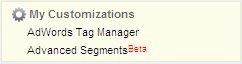
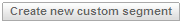
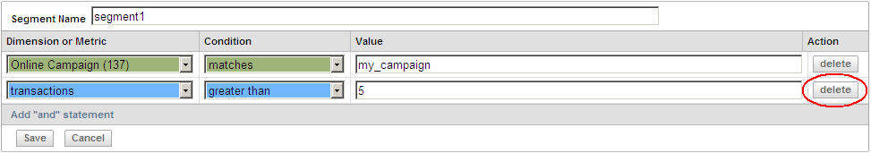
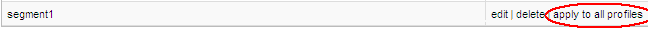

[Urchin7]: Advanced (Visit) Segmentation
Advanced(Visit) Segmentation
Advanced Segment
Each advanced segment is a combination of filters joined by "AND" condition.
Metrics support numeric comparison operators "equals to", "less than", "less than or equal to", "greater than" and "greater than or equal to".
Dimensions support regular expressions with operations "matches" and "does not match".
Example: "refferal" matches "yahoo" AND "pageviews" greater than "1"
Advanced segments editor is available on My Customizations -> Advanced Segments page.
Advanced Segmentation
Advanced Segmentation provides functionality to manage the advanced segments and apply them to reporting data.
There are altogether four different types of advanced segmentation:
-
visit segmentation - advanced filters can be applied to dimensions and metrics that are linked with visit
-
dimensions: browser_base, browser_version, domain_complete, domain_primary, ecommerce_affiliation, ecommerce_bill_city, ecommerce_bill_country, ecommerce_bill_region, ecommerce_product_code, ecommerce_product_name, ecommerce_variation, geo_city, geo_connection_speed, geo_country, geo_latitude, geo_longitude, geo_organization, geo_region, platform_base, platform_version, request_stem, user_defined_variable, username, utm_campaign, utm_content, utm_flash_version, utm_java_enabled, utm_js_version, utm_language, utm_medium, utm_page_title, utm_screen_colors, utm_screen_resolution, utm_source, utm_term, visitor_type
-
metrics: goals1, goals2, goals3, goals4, pages, revenue, transactions, visits
-
path segmentation - advanced filters can be applied to dimensions and metrics that are linked with path - supported only through the Data API v2.0
-
transaction segmentation - advanced filters can be applied to dimensions and metrics that are linked with transaction - supported only through the Data API v2.0
-
transaction item segmentation - not supported
The Manage Urchin Advanced Segments page can be found via the My Customizations -> Advanced Segments link. This page displays a list of segments that have been configured and contains controls for creating, editing and removing the Advanced Segments.

Known limitations
Creating New Segments
To create and configure a new segment, click the Create new custom segment button on the Manage Urchin Visit Segments page.

Provide a Segment Name, select Dimension or Metric, select Condition and provide required Value.
Click Add "and" statement to add a Dimension or Metric to the segment.
Click Save to complete the New Segment creation.
Once the segment is created, it can be edited, deleted or applied to other profiles (according to User access permissions).
Editing Segments
To edit a segment, click the edit link in the Actions area for the corresponding segment.
While editing, the user may change the segment's Name, Dimension or Metric, Condition and Value and to add additional Dimension or Metric query strings to the segment.
Unwanted Dimension or Metric query strings may be removed from a segment definition by clicking the delete button.

Deleting Segments
To delete an existing segment, click
the
delete link in the Actions area for the corresponding segment.
Applying Segments to the Profiles
This option is available when creating/editing the segment. Once the segment has been applied to the profiles, the option is available only to user who created it. Segments cannot be shared between different users.
To apply segment to the profiles, click apply to all profiles link at the Actions section near the corresponding segment.

To remove link between all profiles (excepting currently opened) and particular segment, simply open the definition of this segment and save it. The re-saved segment will be granted to the current profile only.